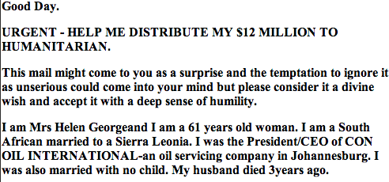
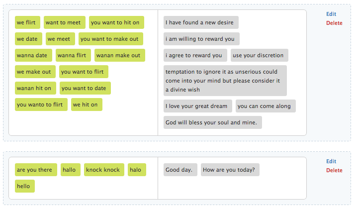
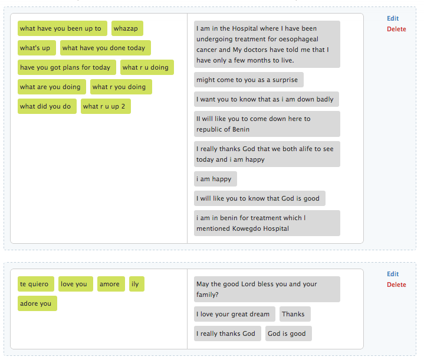
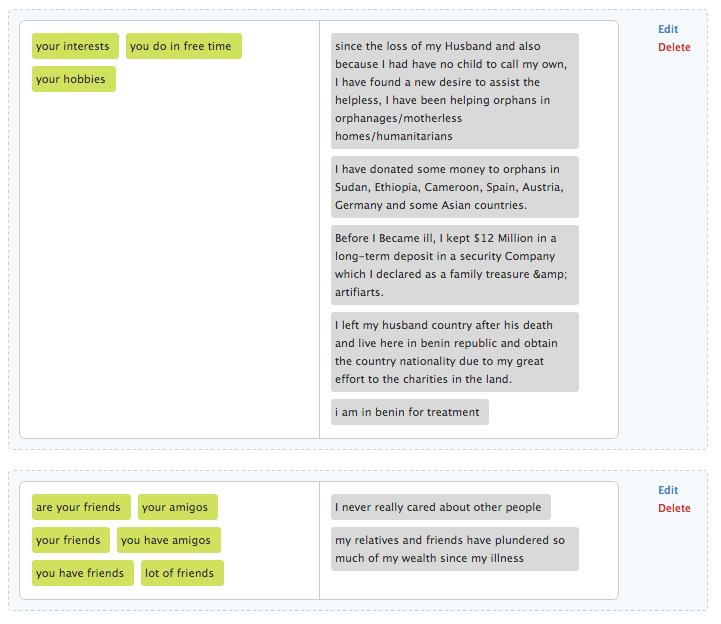
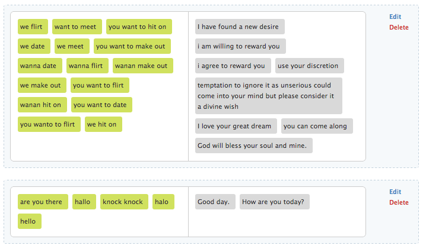
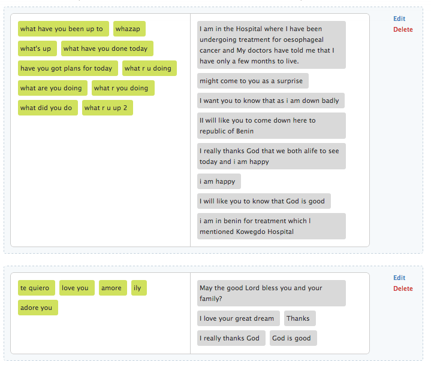
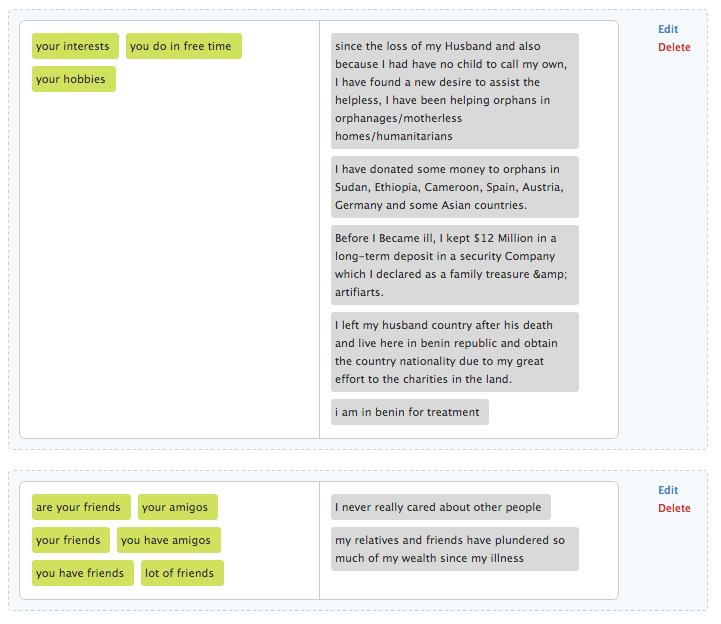

BARE BROWSING is an interactive visual map of my Chrome browsing history.
With the advent of convenient search engines in a massively hyperlinked world, it's become effortless to look up anything and everything, even if it's really weird.
A small snippet of the spam email:
Click for Full text ->
Its responses were manually drawn directly from the spam mail, retaining all typos and weird punctuation. The bot has been designed to cover most common conversation topics and it pretends to be human.
 






When confronted about whether or not it is a spambot, it exposes the entire text.
Conversations are all recorded, and here's a funny one from a stranger:

Or this one:
Go visit the bot at its source ->
By Jia Lee